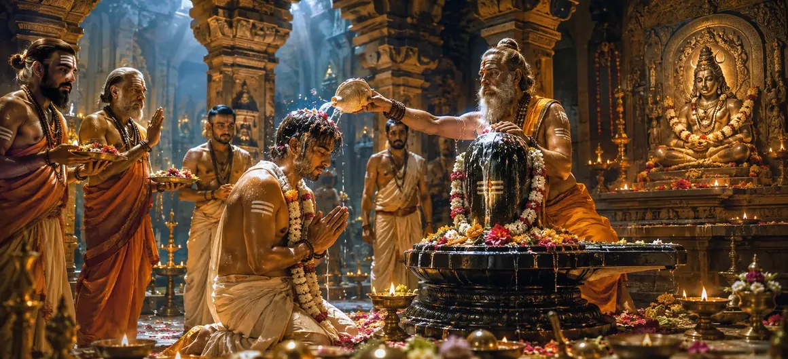

Consecration of the Aspirant
The fifty-fourth chapter of the Vayaviya Samhita details the sacred consecration rites, rituals, and protocols required to formally empower a dedicated spiritual aspirant.
Rishi Vayu explains how the preceptor elevates the prepared seeker, bestowing upon them the authority and grace necessary for advanced spiritual progression.
This transformative ritual marks a monumental milestone in the seeker's journey toward Lord Shiva.
Chapter 54 Highlights
Aspirant Readiness
Evaluating and preparing the seeker for consecration.
Sacred Rituals
Fire offerings and purifying oblations.
Divine Empowerment
Bestowing spiritual authority through the Guru.
Conscsecrated Waters
Abhisheka and ritual cleansing protocols.
Mantra Bestowal
Unlocking higher mantras for the dedicated initiate.
Path Forward
Preparing for special consecration in Chapter 55.
Core Topics in This Chapter
- 01Qualifications and Mental Readiness of the Aspirant→
- 02Preparatory Rites and Altar Construction→
- 03Sacred Fire Offerings and Inner Purification→
- 04Ritual Bathing and Consecration (Abhisheka)→
- 05Bestowal of Grace and Higher Mantra Transmission→
- 06Responsibilities and Duties Following Consecration→
- 07Transition to Chapter 55 (Special Consecration)→
Qualifications and Mental Readiness of the Aspirant
Rishi Vayu explains that before consecration, the aspirant must demonstrate deep devotion, purity of heart, and unwavering faith in Lord Shiva and the Guru.
Such mental and emotional readiness ensures that the sacred rites yield profound spiritual results.
Preparatory Rites and Altar Construction
The ritual ground is consecrated, and a beautifully decorated sacrificial altar is prepared with sacred diagrams, flowers, and ritual vessels.
Every element is arranged according to precise scriptural injunctions.
Sacred Fire Offerings and Inner Purification
Homa (fire offerings) is performed with ghee, herbs, and sacred wood while chanting powerful mantras to invoke the presence of Lord Shiva.
The blazing fire acts as a purifier, burning away remaining spiritual impurities.
Ritual Bathing and Consecration (Abhisheka)
The aspirant undergoes ritual bathing with consecrated waters infused with sacred herbs and fragrant essences, symbolizing spiritual rebirth.
This bath washes away earthly pollutions and prepares the subtle body for divine grace.
Bestowal of Grace and Higher Mantra Transmission
The Guru places his hand upon the aspirant's head, transmitting divine energy and whispering the confidential mantra into their ear.
This transmission awakens the inner spiritual faculty and seals the bond between Guru and disciple.
Responsibilities and Duties Following Consecration
Following consecration, the newly empowered seeker must maintain daily worship, ethical conduct, and strict adherence to their spiritual vows.
Diligence in duty ensures the continuous flow of grace.
Transition to Chapter 55 (Special Consecration)
Having detailed the consecration of the aspirant in Chapter 54, Rishi Vayu prepares to narrate Chapter 55, 'Special Consecration'.
This next chapter will explore advanced consecration rites designed for highly evolved practitioners.
Key Teachings of Chapter 54
Seeker Readiness
Cultivating devotion and mental purity.
Sacred Fire
Performing purifying oblations (Homa).
Abhisheka Rituals
Sacred bathing for spiritual rebirth.
Energy Transmission
Empowerment through Guru's touch and grace.
Mantra Awakening
Receiving confidential seed mantras.
Special Prelude
Setting up special consecration in Chapter 55.
Spiritual Reflection
Consecration is the sacred gateway where human aspiration meets divine grace, transforming an earnest seeker into an empowered instrument of Lord Shiva.
Living the Message of Chapter 54
Approach your spiritual practices with the reverence, dedication, and purity exemplified in consecration rites.
Honor the teachings of your Guru and maintain steadfast commitment to your spiritual vows.
Let every daily action reflect the inner empowerment gained through spiritual dedication.
Key Spiritual Concepts
Consecration and initiation of the spiritual aspirant.
Sacred fire ritual protocols for purification.
Consecrated ritual bath for spiritual renewal.
Transmission of spiritual energy from Guru to disciple.
Instruction and bestowal of sacred mantras.
Strict adherence to sacred vows and duties.
Chapter Summary
Vayaviya Samhita Chapter 54 outlines the Consecration of the Aspirant, detailing qualifications, altar preparation, sacred fire offerings, ritual bathing, and the transmission of higher mantras by the Guru. This empowering ritual sets the foundation for Chapter 55, 'Special Consecration'.
Frequently Asked Questions
1. What is the primary focus of Vayaviya Samhita Chapter 54?
Chapter 54 focuses on the sacred consecration rites and rituals performed to formally elevate and empower a dedicated spiritual aspirant.
2. Why is the consecration of the aspirant important?
It cements the seeker's transition into deeper spiritual practice, granting them official authority to engage in advanced Shaiva rituals and meditation.
3. Who expounds these consecration rites to the sages?
Rishi Vayu details the ritualistic steps and protocols for the consecration of the aspirant.
4. What is the next chapter for navigation after Chapter 54?
The next chapter for navigation is titled 'Special Consecration'.
“Through the sacred fire, purifying waters, and the grace of the Guru, the aspirant is reborn into spiritual light, fully empowered to walk the path of Lord Shiva.”
Continue Through Vayaviya Samhita
Chapter 54 concludes Consecration of the Aspirant. Continue to Special Consecration.